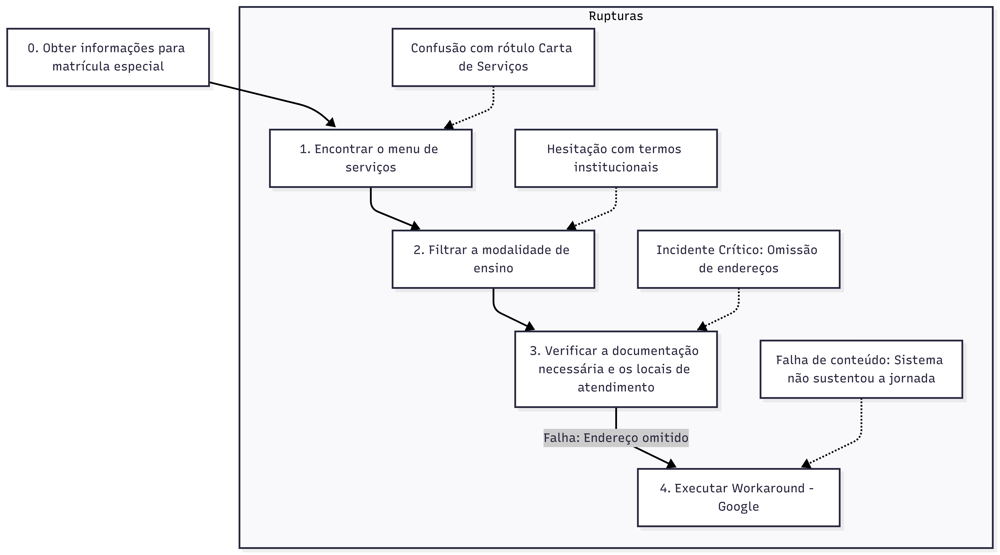

Ensino especial
Introdução
O perfil de usuário consiste em uma descrição detalhada que busca caracterizar quem são as pessoas que podem utilizar o sistema, considerando atributos fundamentais como idade, nível de experiência com tecnologia, atitudes e as tarefas que realizam no cotidiano.Dessa forma, foi aplicado a técnica de entrevista para identificar as necessidades e requisitos do usuário.1
{kind=link}
Neste projeto acadêmico, a aplicação da técnica e a coleta de dados foram conduzidas de forma presencial pela integrante Luara Cristiana, que acompanhou a usuária em seu ambiente domiciliar para observar a interação com a tecnologia em uma situação real. A duração da entrevista foi de aproximadamente 20 minutos e registrado por video.
Objetivo da Entrevista
O objetivo da entrevista foi traçar o perfil de uma mãe de criança com autismo para compreender as dificuldades enfrentadas ao navegar pelo serviço de Ensino Especial no portal da Secretaria de Educação do Distrito Federal (SEEDF). A intenção foi revelar obstáculos práticos de usabilidade e comunicabilidade que podem impedir a usuária de acessar informações escolares importantes, buscando extrair os requisitos para fundamentar as melhorias no design da plataforma.
Tópicos abordados na entrevista
Utilizando o livro de IHC como base teórica, a sessão de coleta de dados foi estruturada em quatro fases principais para garantir a integridade dos dados e o conforto da participante:
- Aspectos Éticos (TCLE): Antes de qualquer coleta, a participante assinou o Termo de Consentimento Livre e Esclarecido (TCLE), garantindo o respeito à sua autonomia e o anonimato de seus dados e familiares.
- Entrevista Semiestruturada: Utilizou-se um roteiro para extrair informações sobre o perfil demográfico, rotina familiar e experiência tecnológica da usuária, permitindo flexibilidade para novos questionamentos durante a conversa.
-
Investigação do Processo Atual: Uma conversa detalhada sobre o histórico de matrícula da participante para identificar as etapas reais (laudos, triagens e documentos) e as formas alternativas utilizados para sanar a falta de informação no site.
-
Avaliação por Observação: Aplicação do protocolo Think Aloud (pensar em voz alta), onde a usuária realizou uma tarefa prática no site enquanto narrava seus pensamentos e sentimentos, revelando os obstáculos de usabilidade.2
{kind=link}
Aspectos Éticos da Pesquisa
A pesquisa iniciou-se apenas após a leitura e assinatura do Termo de Consentimento Livre e Esclarecido (TCLE). A participante foi informada de que a coleta de dados possuía finalidade estritamente acadêmica e de que ela teria o direito de interromper a sessão a qualquer momento, sem necessidade de justificativa, além disso, antes do início da observação prática, foi reforçado à participante que o foco da avaliação era exclusivamente identificar falhas no design do sistema (site da SEEDF), isentando-a de qualquer julgamento sobre suas habilidades tecnológicas.
Esta abordagem visou evitar a ansiedade e o constrangimento, permitindo um comportamento mais tranquilo durante o uso. A gravação de video, foi mediante a autirização prévia, servindo como ferramenta de apoio à análise.
Perfil de usuário
A estrutura do perfil de usuário foi construida a apartir da entrevista, dessa forma:
Dados Demográficos e Socioeconômicos
Identificação: Mulher, 33 anos, estudante do último semestre de Biomedicina.
Contexto Familiar: Mãe e cuidadora principal de três crianças em idade escolar, sendo um dos filhos diagnosticado com autismo (público-alvo direto do serviço de Ensino Especial).
Rotina e esforço cognitivo
A rotina da participante é marcada por interrupções e atenção dividida. Ela aproveita o período da tarde, enquanto os filhos estão na escola, para dar conta das tarefas de casa e da faculdade. Dessa forma, como ela costuma buscar informações importantes justamente nesses momentos de maior cansaço, o sistema precisa ser muito prático e fácil de usar logo de primeira, sem exigir esforço extra.
Habilidade Tecnológica
Preferência de Dispositivo: Apresenta familiaridade com o uso de smartphones para tarefas rápidas do cotidiano, mas relata preferência pelo computador por lhe transmitir maior sensação de segurança ao realizar procedimentos burocráticos ou fornecer dados pessoais.
Relação com Sistemas Governamentais: A usuária apresenta uma atitude crítica em relação aos portais do governo. Relatou forte frustração prévia com mecanismos de autenticação (como o GOV.BR), especialmente quando ocorrem falhas no sistema de verificação em duas etapas, criando barreiras de acessibilidade logo no início da jornada.
Expectativas de uso do sistema: Ao acessar o portal de Ensino Especial, a usuária espera encontrar informações organizadas e diretas, como lista de documentos, endereços de escolas e contatos telefônicos, sem a necessidade de terminologias técnicas e complexas.
Análise de Tarefas
A Análise de Tarefas foi conduzida para entender o domínio do problema e investigar como o usuário traduz seus objetivos do "mundo real" (variáveis psicológicas) para os controles oferecidos pelo sistema (variáveis físicas), atravessando os Golfos de Execução e Avaliação descritos pela Engenharia Cognitiva de Norman.3
{kind=link}
Foi utilizada a técnica HTA (Análise Hierárquica de Tarefas) para decompor o objetivo principal da participante em subobjetivos e operações.4
{kind=link}
Descrição do Cenário
Objetivo exemplo do Usuário: Localizar a lista de documentos necessários para a matrícula na modalidade de Ensino Especial e encontrar o endereço de uma escola habilitada.
Representação em Tabela (HTA)
| Objetivo / Subobjetivo | Descrição da Operação | Notas Observadas (Rupturas) |
|---|---|---|
| 0. Obter informações para matrícula especial | Plano 0: Realizar 1; se a seção for encontrada, realizar 2. Se a informação estiver listada, realizar 3. Caso haja falha na informação, realizar 4. | O objetivo final é reunir informações suficientes para ir à escola presencialmente ou iniciar o processo online. |
| 1. Encontrar o menu de serviços | O usuário deve localizar o caminho para a área de matrículas no menu principal do site. | Incidente Crítico: A participante relatou confusão com o rótulo "Carta de Serviços". Ela procurava explicitamente pela palavra "Matrícula". |
| 2. Filtrar a modalidade de ensino | Selecionar a opção "Ensino Especial" ou "Educação Precoce". | O uso de nomenclaturas institucionais gerou hesitação (baixa comunicabilidade). |
| 3. Consultar exigências e locais | Ler a página de resultados para extrair a lista de documentos, endereços e telefones úteis. | A página listava as escolas, mas omitia os endereços e contatos telefônicos. |
| 4. Executar "Workaround" (Gambiarra) | Abandonar a busca interna no site e recorrer a um motor de busca externo no caso mencionado (Google) para localizar o endereço da escola encontrada no passo 3. | Caracteriza falha de conteúdo relevante. O sistema não sustentou a jornada do usuário até a conclusão da tarefa. |
Representação em diagrama
{kind=link}

Fonte: Elaborado pelo autor.
Avaliação Crítica da Experiência do Usuário
Durante a aplicação do "pensar em voz alta" na entrevista, foram idenficcados os seguintes impactos na Experiência do usuário:
Dificuldade no Golfo de execução: A arquitetura da informação presente no sistema não corresponde a forma como a usuária pensa. O uso de termos ("Carta de Serviços") em vez de termos diretos ("Matrícula do aluno") gerou uma desconexão entre a intenção da usuária e a operação exigida pelo sistema.
Falha no Golfo de Avaliação: A ausência de dados práticos (como o telefone e o endereço das escolas nas listagens) impediu que a usuária avaliasse positivamente o estado do sistema. O site informou a existência da escola em locais diferentes, e em outros não informou. de modo geral, falhou em fornecer a utilidade final da informação.
Sentimento: A participante definiu sua experiência com a palavra "Confusão". Ao ser questionada sobre sua resiliência na tarefa, afirmou enfaticamente que, se estivesse sozinha em casa, teria desistido do processo digital e procurado outras vias (como telefonar ou ir presencialmente à Regional de Ensino).
Conclusão Parcial:
O sistema analisado apresenta barreiras de usabilidade que impactam diretamente a satisfação e a eficiência. A interface exige alto esforço cognitivo para navegação e fornece respostas incompletas, transferindo para o usuário a carga de realizar buscas complementares fora do ambiente do portal.
Entrevista: Link
Referências Bibliográficas:
BARBOSA, S. D. J.; SILVA, B. S. da; SILVEIRA, M. S.; GASPARINI, I.; DARIN, T.; BARBOSA, G. D. J. (2021). Interação Humano-Computador e Experiência do Usuário. Autopublicação. ISBN: 978-65-00-19677-1.
DISTRITO FEDERAL. Secretaria de Estado de Educação. Portal da Secretaria de Estado de Educação do Distrito Federal. Brasília, 2026. Disponível em: https://www.educacao.df.gov.br/. Acesso em: 03 maio 2026
| Versão | Data | Descrição | Autor(es) | Revisor(es) |
|---|---|---|---|---|
1.0 |
03/05/2026 | Criação da página, inserção dos tópicos, links e bibliográfias | Luara Cristiana |